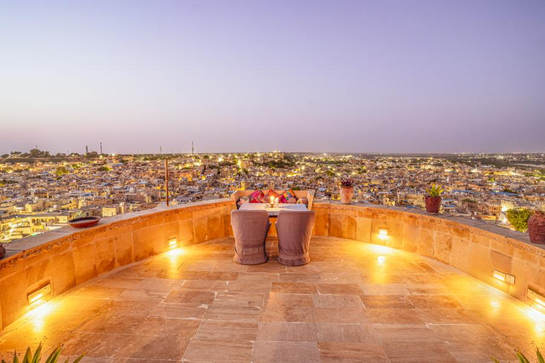
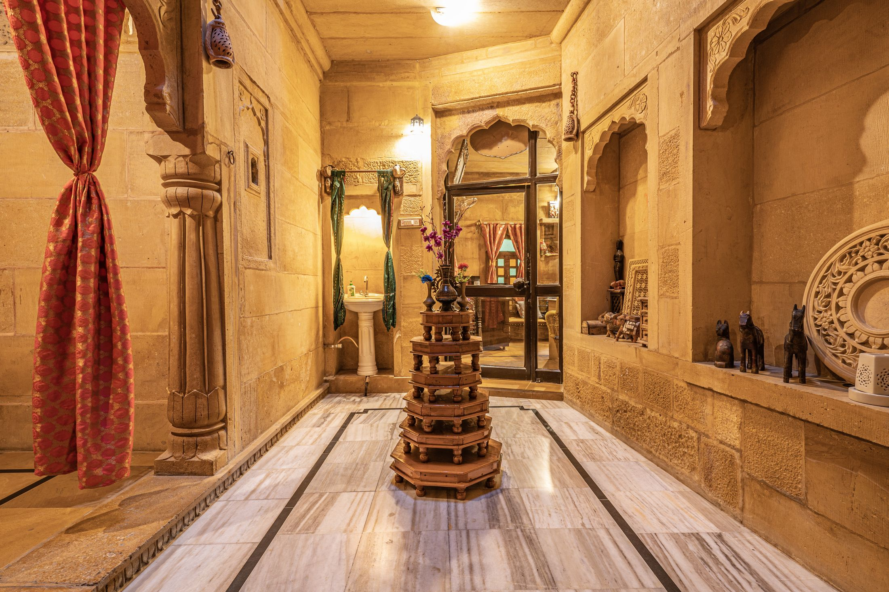
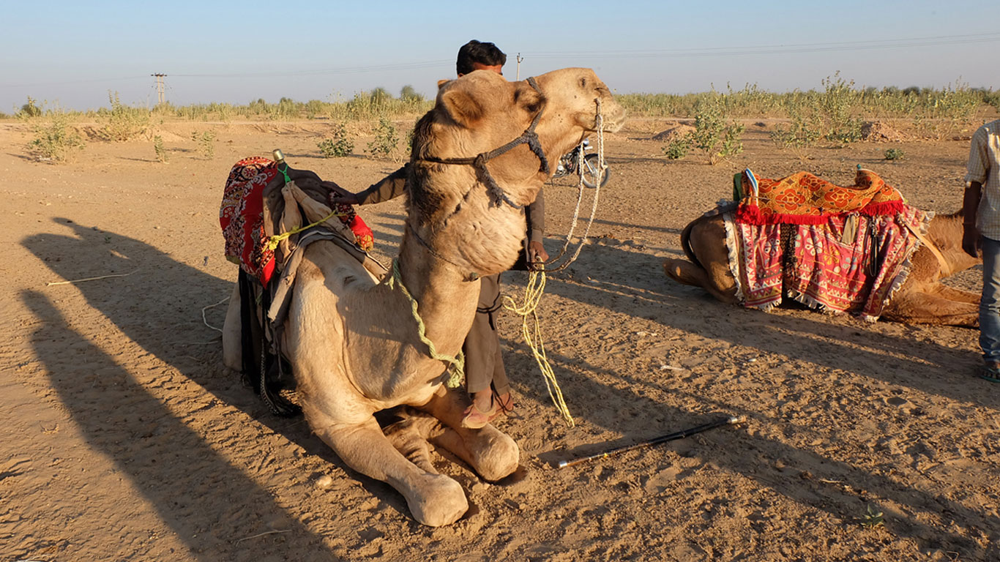
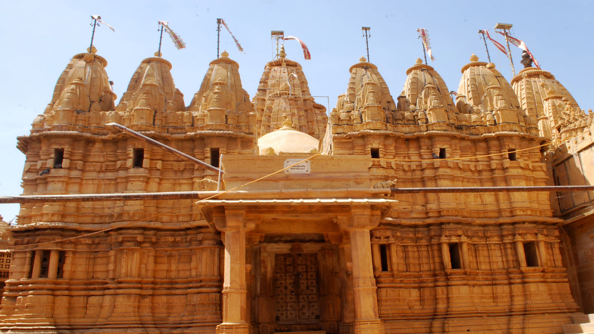
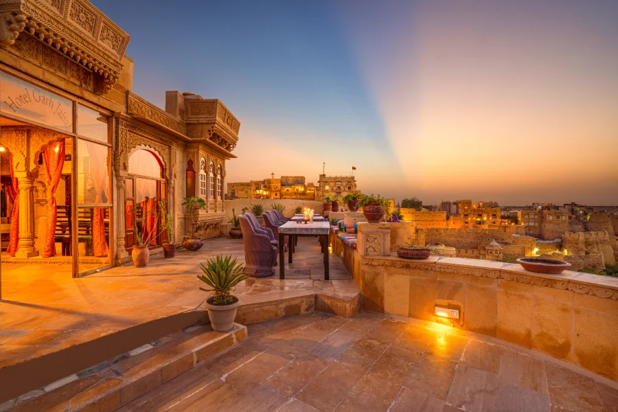
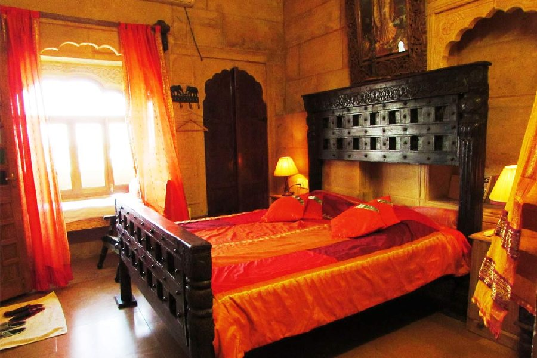

Inside the living fort
Step into Jaisalmer’s historic quarter and experience its lanes, landmarks and everyday life up close.

A different way to discover Rajasthan
Come home to a family-run haveli within the living walls of Jaisalmer Fort—where old sandstone, rooftop sunsets and the warmth of local hospitality make the journey as memorable as the destination.
Share your dates and we’ll help you plan a stay that fits.
Not just a room. A sense of place.
In the heart of the Golden City, inside the walls of Jaisalmer Fort, Garh Jaisal Haveli offers a more personal way to experience Rajasthan.
Wake to the rhythm of the fort’s narrow lanes. Wander through carved sandstone streets and colourful bazaars. Return to the rooftop as the city turns amber, with time to slow down and stories to share.
Get to know our haveli
02 / Beyond the room
A stay here is a doorway to the city’s layered stories—from the first quiet walk through the fort to evenings beneath the desert sky.

Trade the city lanes for dunes, changing light and an evening that feels wonderfully far away from the everyday.

Explore fort lanes, local landmarks and the traditions that give the Golden City its character.

Settle in for an unhurried meal, a city-wide view and the last light on the sandstone rooftops.
03 / Rest, the Rajasthani way
Characterful spaces, traditional detail and the essentials for a comfortable pause between adventures.

Each visit to Jaisalmer has its own rhythm. Find a comfortable base for yours, with heritage character and a welcoming place to return to after a day exploring.
Room layouts, inclusions and rates vary. Ask us what’s available for your dates.
04 / A table with a view
Gather on the rooftop for a meal or a special occasion. Ask whether a candlelit setup can be arranged for your date; current menu, service hours, prices and availability need confirmation.
Discover rooftop dining05 / Why stay with us
We believe a place becomes memorable through the people who welcome you, the stories they share and the details that help you feel at ease.
Step into Jaisalmer’s historic quarter and experience its lanes, landmarks and everyday life up close.
Read the arrival guidance, then confirm the meeting point and any assistance through a verified booking contact.
Bring together your stay, city discovery, rooftop dining and a desert adventure in one conversation.
Travel is at its best when you feel part of a place—not simply passing through it.
THE GARH JAISAL WAY
Before you arrive
We want your arrival and your stay to feel simple. Here are answers to the questions travellers ask most.
Read arrival guidanceYes. We are located inside the historic fort in Kotari Para, Jaisalmer. The lanes are narrow and vehicles cannot reach the hotel door, so please read our arrival guide before travelling.
Luggage assistance is not guaranteed. Use the verified contact route from your booking confirmation to ask whether help can be arranged for your arrival.
We can help you enquire about desert safari and camping options, as well as guided city tours. Share your interests and travel dates and we’ll discuss the available choices.
Use the verified contact route from your booking confirmation to ask about your dates and party size. Availability, room options and current rates must be confirmed for your request; this page does not make a reservation.
Your Rajasthan story, your way
Tell us when you’re coming. We’ll help you take the next step towards a stay inside the fort.
Start a booking conversation No pressure. Just local help, directly from our team.Plan with context
Start with the part of the trip you need to settle first. Room details, current dining options, tour inclusions and arrival arrangements all need confirmation for your dates; this site does not show live inventory or complete a reservation.
Ask for the exact room, bed arrangement, occupancy, inclusions and total rate before deciding. A photograph is a guide to character, not a live room assignment.
Plan your stay →Compare desert and city experiences, then confirm route, timing, language and inclusions for the requested date.
Explore experiences →Check the current menu, service hours, prices and table availability before travelling, especially for a special occasion.
Read dining guidance →Review the locally hosted photo selection and read the final-walk guidance before you set out.
View the gallery → Plan arrival →